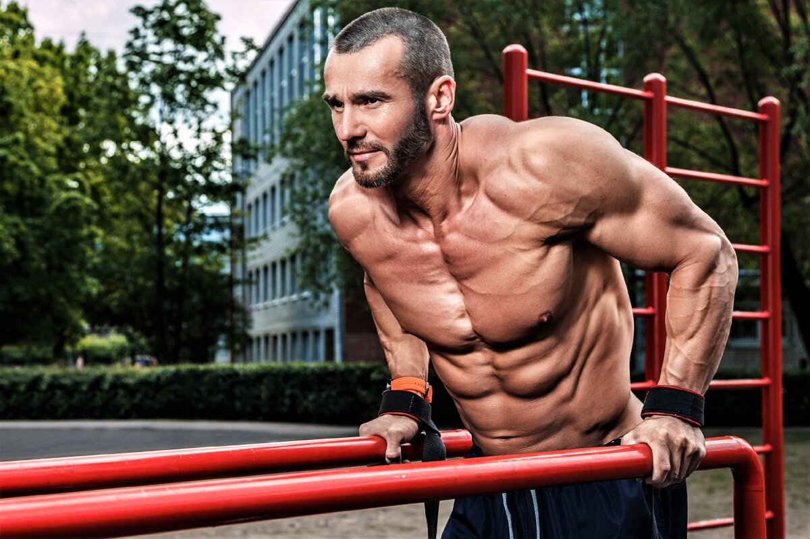

Стрит-Воркаут: Что это такое и Какие виды существуют
Добрый день, Дорогие Читатели!
Воркаут - это спортивное направление, которое подразумевает работу с собственным весом на спортивных площадках. Это направление состоит из комплексов упражнений на турниках, брусьях и кольцах. В грубом понимании можно сказать, что это любые упражнения, в которых нужно противостоять гравитации и тяжести собственного тела.
Виды воркаута:
Силовой экстрим.
Основной задачей атлета, занимающегося этим направлением воркаута, является увеличение силы и мышечных объёмов. В базисный список упражнений входят подтягивания, отжимания от пола, отжимания на брусьях и приседания.
Однако, на этих упражнениях направление не заканчивается. В дальнейшем атлеты могут выполнять более эффектные и более сложные элементы. Сюда входит флажок, горизонт, выходы силой, перед вис и другие. Эти элементы придуманы уже несколько лет назад, но до сих они поражают людей своей эффектностью.
Это направление динамично, и новые элементы постоянно появляются в списках этого направления. Поэтому некогда невозможные упражнения становятся общепринятыми среди спортсменов.
Спортивная гимнастика.
Спортивная гимнастика является самым травмоопасным подвидом этого направления. Но, если для предыдущего подвида нужна большая сила, то здесь она не обязательна. В классическом понимании сюда входят различные вращения на турниках, кольцах и брусьях. Однако, и здесь атлеты умудряются придумывать новые и новые элементы. Травмоопасность этого направления обязует использовать дополнительный инвентарь - лямки и маты, а перед тренировкой необходимо тщательно разминать суставы.
Джимбар.
Джимбар - это направление стрит-воркаута, появившееся в Колумбии, цель которого зафиксировать положение тела в крайне неудобной позе. Выполнение упражнения должно осуществляться за счёт силы атлета, а не инерции. Некоторые элементы требуют огромной силы, чтобы удержать моментами невозможные положения.
Однако, существуют элементы, которые трудно определить под отдельное направление, поэтому воркаут развивается огромными шагами и комплексно.